The issuance of boat numbers for vessels is facilitated by the MSDFAR, a digital platform designed for this purpose. This manual is intended to serve as a guide for users engaged in this process, with the necessary steps and procedures outlined to ensure efficient registration.
To access the MSDFAR System, users must have authorized credentials provided by the Department of Fisheries and Aquatic Resources. Once logged in, users will have access to the functionalities required for issuing boat numbers.
• Before access to the system, scan & save the following documents.
• Access to the MSDFAR system
Type https://www.fisheriesdept.gov.lk/ in the address bar of the browser. You will see the login page. The system can be accessed through Officer → New MSDFAR System by visiting the Department of Fisheries and Aquatic Resources website.
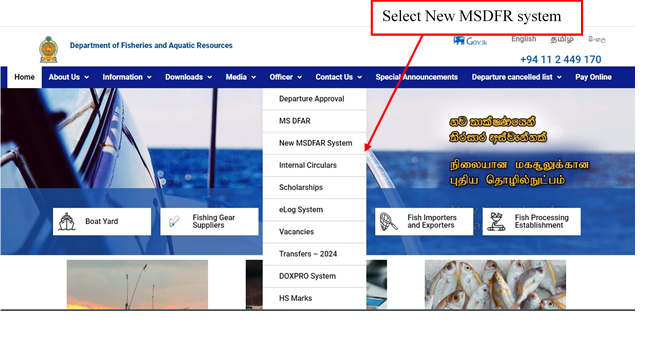
• Users authorized to access the system will be provided with login credentials.
• Upon successful login, users will have access to the dashboard with relevant features and functionalities.
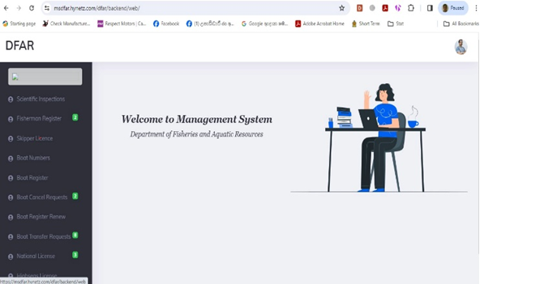
• This screen can be seen once the Boat Numbers in the manual bar is clicked on.
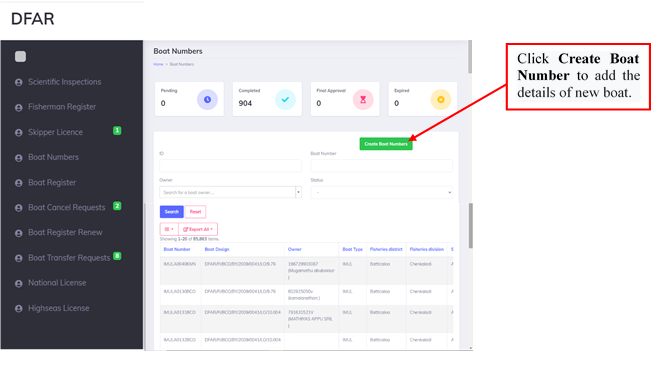
• Fill all the details mentioned here and click " Submit "
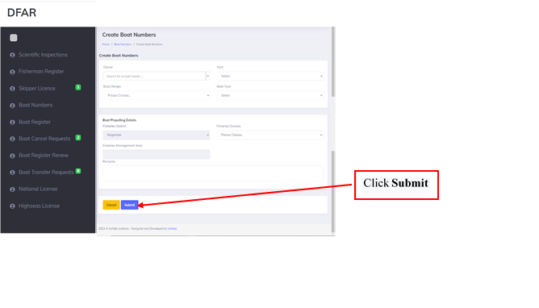
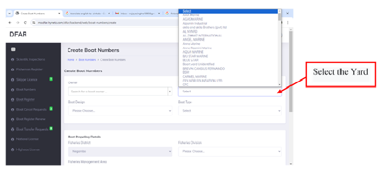
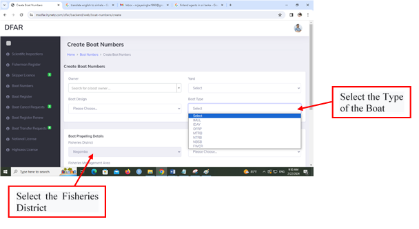
• This information can be viewed by the District Fisheries Officer by selecting "Pending" in the status bar.
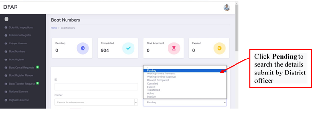
• District Fisheries Officer can view each pending application sent by District Officer by clicking on "View"
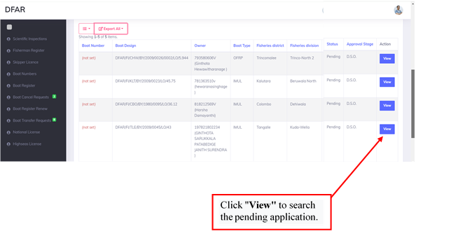
• Once clicked "View" , the details can be viewed as follows.
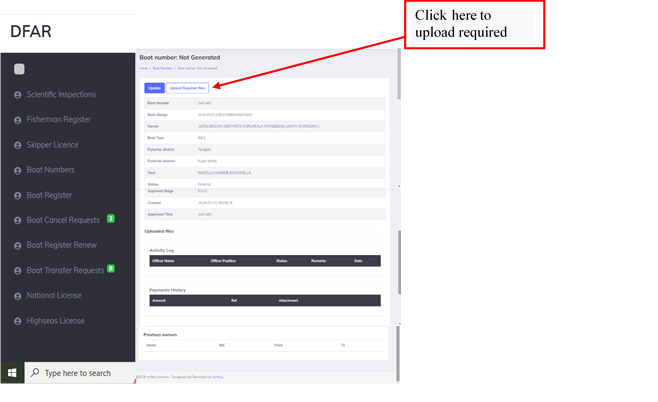
• The required documents can be uploaded here and click on "Save" to save each document.
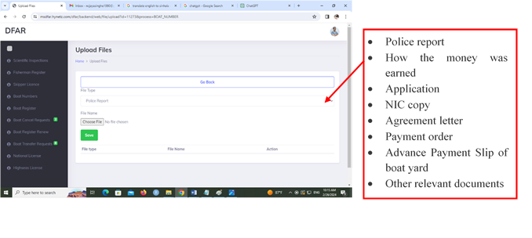
• After uploading the necessary documents, navigate back by clicking "Go Back" , then proceed to submit the application by clicking "Submit." The submission will then be directed to the District Assistant Director.
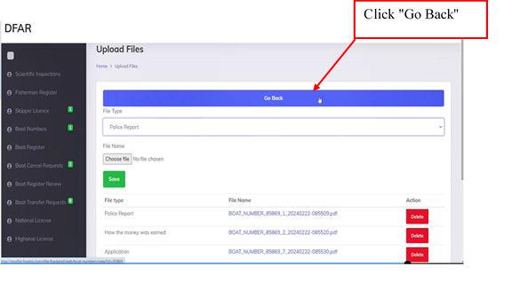
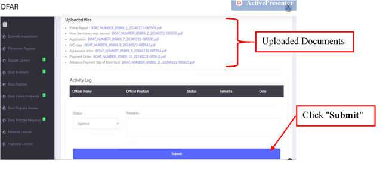
• After the application is forwarded by the District Assistant Director to the Director (Management), it is forwarded to the DG.
• Once the DG approval is received the payment receipt is uploaded in the system by the District Office.
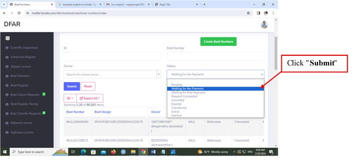
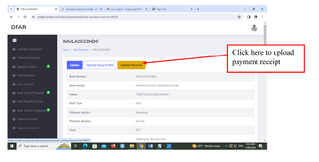
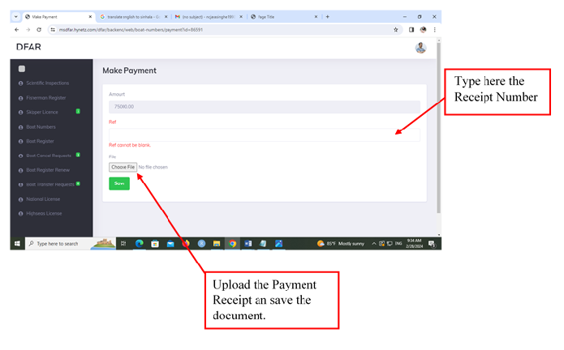
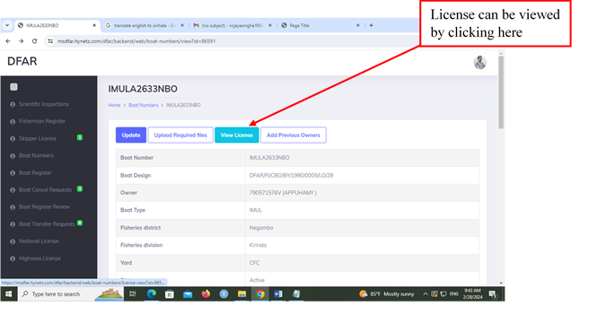
• License appears as follows. This can be printed from the District office.
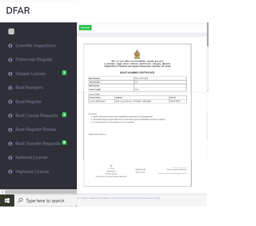